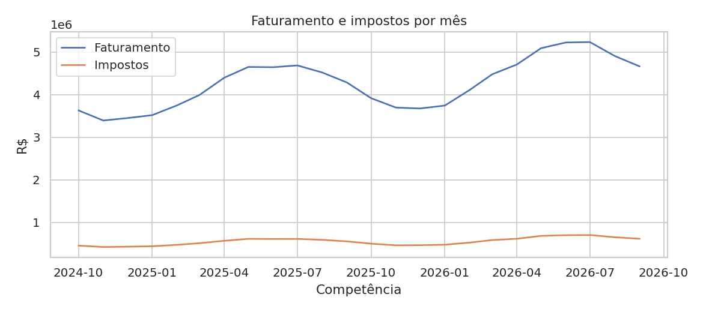

Sobre o projeto
Este projeto apresenta uma análise detalhada de um escritório de contabilidade, considerando carteira de clientes, faturamento, impostos por regime tributário, honorários e inadimplência. Os dados são fictícios, preservando o sigilo contábil exigido pela profissão.
A proposta demonstra um fluxo de trabalho completo: preparação e tratamento dos dados, análise exploratória, criação de indicadores estratégicos, visualizações gráficas, dashboard interativo e publicação online.
Perguntas de negócio
O Simples Nacional apresenta menor alíquota para faturamentos iniciais, enquanto o Lucro Presumido e Real variam conforme a margem de lucro e setor operacional das empresas ativas.
A evolução mensal demonstra sazonalidade em trimestres específicos, com crescimento proporcional da arrecadação de tributos em relação à receita bruta total.
A maior concentração de receita encontra-se no setor de Serviços e Comércio, prioritariamente localizados nos estados do Sudeste e Sul.
A taxa média de inadimplência dos honorários contábeis é calculada mensalmente, permitindo identificar perfis de clientes com maior atraso de pagamento.
Através do simulador interativo no dashboard, é possível cruzar faturamento e despesas para simular e escolher o regime tributário de menor custo fiscal.
Indicadores analisados
Faturamento Apurado
Soma total do faturamento de toda a carteira de clientes.
Impostos Apurados
Montante total de impostos calculados no período.
Carga Tributária
Proporção do imposto em relação ao faturamento bruto.
Honorários
Receita operacional direta gerada pelo escritório.
Inadimplência
Percentual e taxa de honorários contábeis não pagos.
Tecnologias utilizadas
Algumas visualizações



Arquivos do projeto
Dashboard Interativo
O dashboard foi desenvolvido com Streamlit e possui filtros dinâmicos, KPIs em tempo real, gráficos de alta performance, mapa interativo, simulador tributário, consulta de CNPJ via API e suporte a upload de novos dados via CSV.